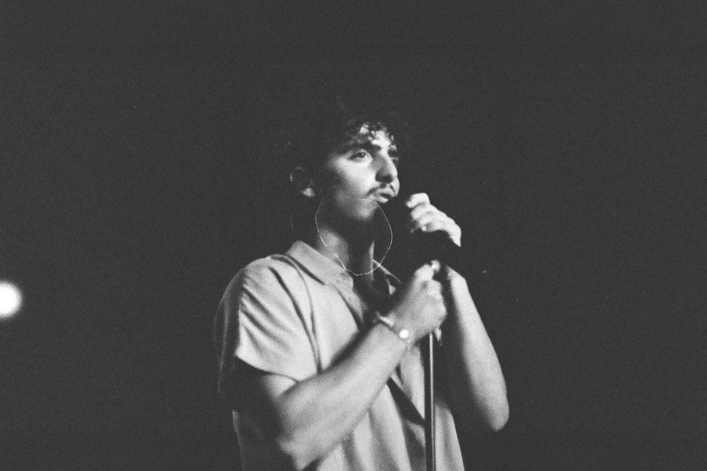
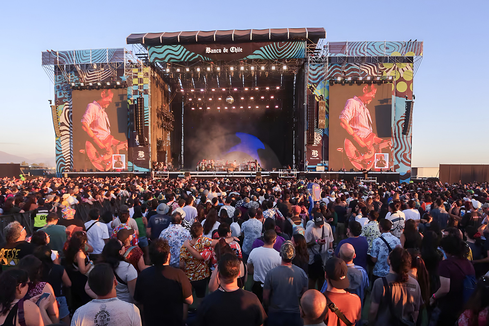

Los nuevos nominados al Grammy llegan al Lolla 2025
Teddy Swims y Benson Boone
Teddy Swims y Benson Boone

Ya han pasado varios meses desde que se anunció el Line up oficial para Lollapalooza Chile 2025 y son varios los nombres que figuran cerca de los cabecillas de cartel que, por los comentarios en redes, son poco conocidos (al menos por los asistentes a este festival desde sus primeros años realizándose en suelo nacional).
Pero acá venimos a salvarte un poco y te presentamos a dos de estos artistas que, como muchos de los cantantes actuales, han logrado de hacerse de fama gracias a la influencia de las redes sociales. ¿De quiénes conversaremos? Esta vez, de Benson Boone y de Teddy Swims, dos cantantes que cuya popularidad ha visto una crecida importante y que, incluso, han logrado el reconocimiento de los premios Grammy, donde ambos compitieron con artistas como Sabrina Carpenter, Doechii, Chappell Roan y Raye en la categoría de “Mejor Nuevo Artista”.
Pero tranquilidad que iremos de a poco, solo para que te hagas una idea de la trayectoria de los cantantes y de lo que puedes esperar de Benson y Teddy en lo musical (por si, extrañamente, no te has topado alguna de sus canciones en algún vídeo corto de TikTok).

Benson Boone es un cantante estadounidense de 22 años que comenzó a hacerse conocido el 2021 a través de la plataforma TikTok. Contemporáneo a este incipiente éxito, también concursó en el reconocido show de talentos “American Idol”, lo que lo acercó a nuevas audiencias. Sin embargo, fue definitivamente gracias a la red social que su popularidad afloró después que sus canciones comenzaron a compartirse entre los usuarios.
Uno de los golpes más significativos, y que le valió estar varias semanas en las listas del Billboard el año pasado, fue “Beautiful Things”, canción que lo catapultó a la fama.
Para que se hagan una idea, este single ya está por llegar a las 500 millones de reproducciones en YouTube y ya cuenta con más de 1.7 mil millones de streams en Spotify, esto a poco más de un año de su lanzamiento. Si te da flojera buscar esta canción, no te preocupes, que aquí te ahorramos abrir una nueva ventana. Puedes revisar el vídeo musical aquí.
En general, lo que se puede esperar de Benson Boone es un pop bien desde la emoción, pero liviano; si escuchas su álbum, se puede entender su éxito transversal a las edades y por qué 5 de sus canciones pasaron por la lista Billboard Hot 100.
Teddy Swims, por otro lado, comenzó su carrera como cantante el 2011 y ya, con 32 años, finalmente logró posicionarse de manera firme en esta dinámica industria musical.
El cantante se comenzó a hacer de un nombre por su tremenda voz a través de la liberación de distintos covers en YouTube, canciones que finalmente hacía propias y que terminaron volviéndose muy populares en su canal. Esa popularidad se trasladó a Spotify. Es cosa de ver la cantidad de millones de reproducciones que se pueden ver en los primeros covers que publicó a través del gigante del streaming.
Sin embargo, fue gracias al éxito de su single “Lose Control”, lanzado originalmente el 2023, que su nombre comenzó a ser más escuchado y su trabajo, más reconocido. De todas maneras, si revisamos Spotify, podemos ver que anteriormente sí tuvo varios hits en esta plataforma, como “Devil in a Dress” (2022) y “All That Really Matters” (2022) aunque, claro, jamás con los números que consiguió “Lose Control”. 1.5 mil millones reproducciones está por conseguir en Spotify y logró posicionarse en el número 1 de las listas de Billboard.
Acá igual te dejamos su versión en vivo, para que logres entender el increíble talento de Teddy. A diferencia de Benson Boone, con Swims puedes esperar pinceladas de country, blues, góspel y soul, tanto en su música, como en su voz. Es que pareciera que cuando lo escuchas realmente te estás trasladando a otra época.

Recordemos que Benson Boone estará presentándose en Lolla el próximo 21 de marzo (con sideshow incluido para el 20) mientras que Teddy Swims se tomará el escenario de Parque Cerrillos el 23 del mismo mes.
Ahora que conoces un poco más de dos de las estrellas masculinas más populares de las redes, ¿Tienes algún favorito?
 Cultura
CulturaSé que suena raro hablar de calor extremo mientras en Chile todos están buscando la parka más gruesa del clóset.
 Cultura
CulturaEl hecho de que estemos entrando al mes de julio no se puede creer. Pero lo que tampoco se puede creer es la cantidad de artistas que han…
 Cultura
CulturaCuando hablamos de trabajos clásicos de la música chilena, siempre se nombran los discos de Violeta Parra, Víctor Jara, Los Jaivas o…